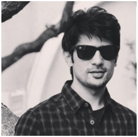
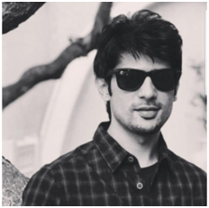
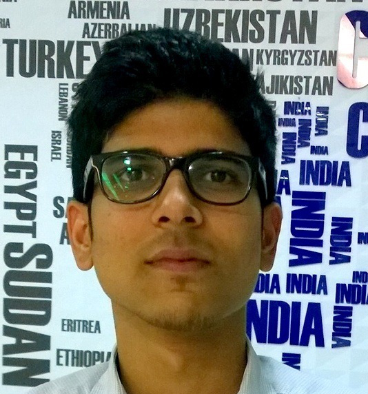
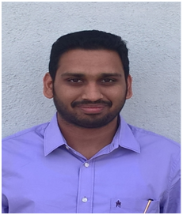
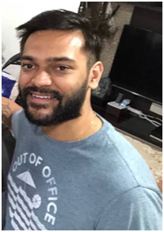
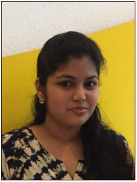
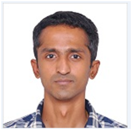

Candidate Testimonials
YAMAN WADHWA
 

Principal Global Services (PGS) is a great place to kick-start your career. I joined Principal as a fresher and now it's been more than 5 years that I have been working in this organization, and the learnings and growth opportunities that I got are tremendous. As a trainee, there's a thorough training provided on the business as well as the technical knowledge. It is made sure that when you start working with other experienced employees you have the required skills to start grasping the vast knowledge at the same time start contributing to the projects. It gives great exposure and learnings when you collaborate with employees of Home Office (US). Working in a Fortune 500 company gives a great sense of pride, as each effort of yours would make a huge Impact. PGS takes care and encourages feedbacks in making sure its employees are getting the required trainings to gain skills and along with that maintain a proper Work Life Balance. .
B.D. College of Engineering
Sevagram
Aritra Banerjee

Principal Global Services being the first company of my career I had no idea what to expect out of it. In general I had not heard much good about doing a job in the IT sector, from the working professionals I knew. As a result I was a bit apprehensive before joining. Moreover I was a Mechanical Engineer in an IT industry... As of today I have no qualms in accepting how wrong my thinking was! Its been over a year and this turned out to be one of the best decisions that I ever took. Be it the training or the culture or the work life balance or the caring people, or maybe it was all of it together that forced me to change my outlook. The most overwhelming feeling that I have now is Pride. Pride to be associated with the Principal!
Sir M. Visvesvaraya Institute of Technology
Bangalore
PREMDEEP SAINI

Principal Global Services is the first company of my career. Before joining I was not sure what to expect from it and what will be expected from me but the training program here made that campus to corporate transition pretty smooth. Also people around here are easily approachable and very supportive. Apart from your technical development PGS also takes care of your personal development. Work-life balance, extra-curricular activities and Parties are few of the points to be highlighted. It's been around 2 years now and I enjoy working here.
AIT
Pune
AISHVARYA KAPOOR

I joined Principal as a trainee graduate in July, 2014. Being a graduate in Automotive Design Engineering and joining in an IT profile, I had absolutely no idea of how and what and I am going to do. I was new to the software industry but that did not matter and the organization has supported me at every step of the way to reach wherever I want to go. You are provided trainings in required technologies and skills. The leadership also supports you with your aspirations. The only limit is your aspiration. Principal is a small family of 1200+ people and you are welcomed into a warm environment where you can approach anyone and everyone. You can openly put forward your views and ask questions. You also get opportunities to work on new technologies and bring in innovative ideas. Apart from the work, we regularly have fun activities, dine-out, numerous outdoor activities and many more to get to know each other better. I have clocked almost 4 years at Principal and I can say that it has been a tremendous journey so far.
University of Petroleum & Energy Studies
Dehradun
ADITYA SABNIS
I joined Principal as a trainee in the month of July, 2016. Since my first day I have enjoyed the kind of environment principal has. Open culture at principal makes everyone from leaders to peers easily accessible. A lot of support is given by the management in terms of overall development of the employees. Innovation culture at principal gave me the opportunity to work on new technologies like chatbots and Machine learning and to present ideas liberally to the business. Learning opportunities at principal proved to be the best kick start for me as a fresher.
GCE
Aurangabad
TUNEET SAXENA

I joined Principal in 2014 as a trainee developer. From the very start the journey here has been amazing. The freedom to do the kind of work you like is one of the many opportunities I got to explore here. The right amount of focus is given on mentoring and coaching to make sure you become successful in your aspirations and career. My decision to join Principal has changed my career in phenomenal ways and I feel proud being a part of this organization.
Gyan Ganga Institute of Technology & Science
Jabalpur
KAJREE KHANDELWAL

For me, Principal is not just a company, it is an experience and here I am provided with an environment to learn and grow. All the new things that I learned here is applied on the real-time applications. Along with the colleagues, I found friends who are always there to help me, all I can say is that I am fortunate to be in a culture where everybody counts and are treated with respect.
VIIT, Kondhwa
Pune
ANIRUDDHA KASYAP

It has been a journey of 5.5 Years for me with Principal Financial Group. The Organization has truly molded me from a Professional perspective with People Development being of utmost importance. What sets Principal apart from other Companies to join as a Fresher, is its Dedicated Trainee Program. There is a lot of emphasis placed on training recruits in necessary IT and Interpersonal skills. The importance placed on Employees helps everyone to quickly settle in and feel valued at every stage of our growth.
Saveetha Engineering College
Chennai